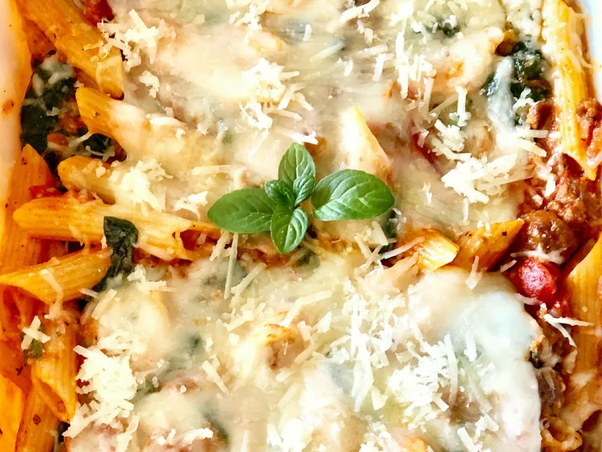

<!DOCTYPE html>
<html lang="en">
<head>
    <meta charset="UTF-8">
    <meta name="viewport" content="width=device-width, initial-scale=1.0">
    <title>Three-Cheese Chicken Penne Pasta Bake</title>
</head>
<body>
  
</body>
</html>
<div class="container"> 
      <h1>Lasagna Recipe</h1>
        
      <h3>Three-Cheese Chicken Penne Pasta</h3>
        <body>
          <p>Three-cheese chicken penne features chunks of chicken in a creamy tomato sauce with basil and fresh spinach baked with multigrain pasta. Serve with Crystal Light iced tea.</p>
        </body>
      <h3>Ingredients</h3>
        <ul>
          <li>cooking spray
            <li>1 ½ cups multi-grain penne pasta, uncooked</li>
            <li>1 (9 ounce) bag fresh spinach leaves</li>
            <li>1 pound boneless skinless chicken breasts, cut into bite-sized pieces</li>
            <li>1 teaspoon dried basil leaves</li>
            <li>1 (14.5 ounce) can diced tomatoes, drained</li>
            <li>1 (14 ounce) jar spaghetti sauce</li>
            <li>2 ounces PHILADELPHIA Neufchatel cheese, cubed</li>
            <li>1 cup KRAFT 2% Milk Shredded Mozzarella Cheese, divided</li>
            <li>2 tablespoons KRAFT Grated Parmesan Cheese</li>
        </ul>  
      <h3>Steps</h3>
        <ol>
          <li>Preheat the oven to 375 degrees F (190 degrees C). Grease a casserole dish with cooking spray.</li>
          <li>Bring a large pot of unsalted water to a boil. Add penne. Cook, stirring occasionally, until tender yet firm to the bite, about 11 minutes; add spinach to boiling water for the last minute. Drain and set aside.</li>
          <li>Grease a large nonstick skillet with cooking spray and place over medium-high heat. Cook and stir chicken and basil in the hot skillet for 3 minutes. Stir in tomatoes and spaghetti sauce; bring to a boil. Simmer on low heat until chicken is cooked through, stirring occasionally, about 3 minutes. Stir in Neufchâtel cheese until melted.</li>
          <li>Add penne-spinach mixture and 1/2 cup mozzarella cheese to the skillet; stir until well combined. Pour into the prepared casserole dish.</li>
          <li>Bake in the preheated oven until heated through, about 20 minutes. Top with remaining 1/2 cup mozzarella cheese and Parmesan. Continue baking until mozzarella is melted, about 3 minutes.</li>
        </ol>
  <aside>

  </aside>
    <div>

    </div>
</div>        